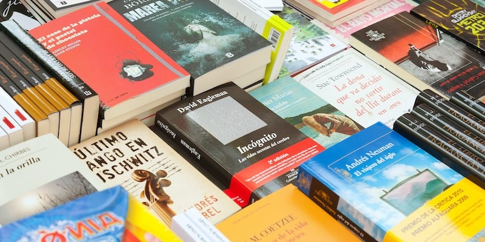

Sobre Mí
Hola, soy Nathaly Noelia Paredes Murillo, nacida el 9 de febrero de 2001 en Santo Domingo, Ecuador. Desde pequeña, siempre fui curiosa y apasionada por aprender cosas nuevas. Actualmente estoy en Portugal, donde paso gran parte del año. Debido a mi estilo de vida realizo viajes constantes que me han permitido conocer diferentes culturas y enriquecer mi perspectiva del mundo.
Mi vida gira en torno al tenis de mesa y los estudios. Soy seleccionada nacional en esta disciplina y represento a mi país en competencias internacionales. Respecto a lo académico, actualmente me encuentro cursando mi sexto semestre de ingeniería de software en la universidad Uniandes
Mi Carrera Deportiva
Juego tenis de mesa desde los 6 años y he tenido la oportunidad de representar a mi país en múltiples competencias internacionales. Algunas de mis experiencias más destacadas incluyen competir en la segunda división de Alemania en tenis de mesa femenino, ser jugadora actual de la liga española, y haber sido múltiple campeona sudamericana y latinoamericana en categorías menores. Actualmente, compito en la categoría de mayores, y entreno cada día para poder subirme el podio en los eventos continentales.
El deporte me ha enseñado la importancia de la disciplina, la perseverancia, la paciencia y la estrategia, habilidades que también aplico en mi vida profesional y personal.
Mis Pasiones y Hobbies
Programación
Estudio Ingeniería de Software en Uniandes. Me gusta el desarrollo back-end y me llama la atención la cyberseguridad

Idiomas y Cultura
Hablo inglés con fluidez y tengo un nivel intermedio de alemán. Aprobé el Telc B1 en el 2020, cuando vivía cerca de Munich
Lectura
Intento leer al menos 10 libros al año, explorando diferentes géneros, aunque me gustan mucho las novelas y el misterio.
Videojuegos y Anime
Fan del anime y de un juego en particular. Stardew Valley es mi favorito y mi anime preferido es Inuyasha.
üé∂ Música
Mi playlist varía entre BTS, baladas, boleros, pop, reggaetón, salsa y música clásica.